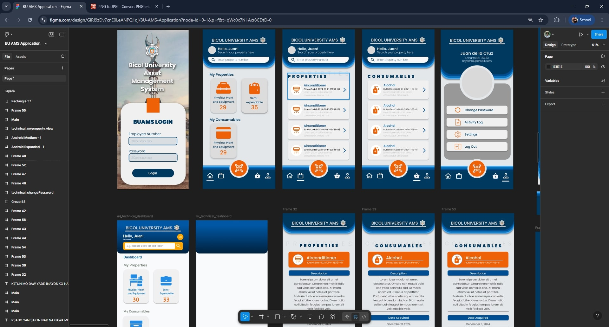
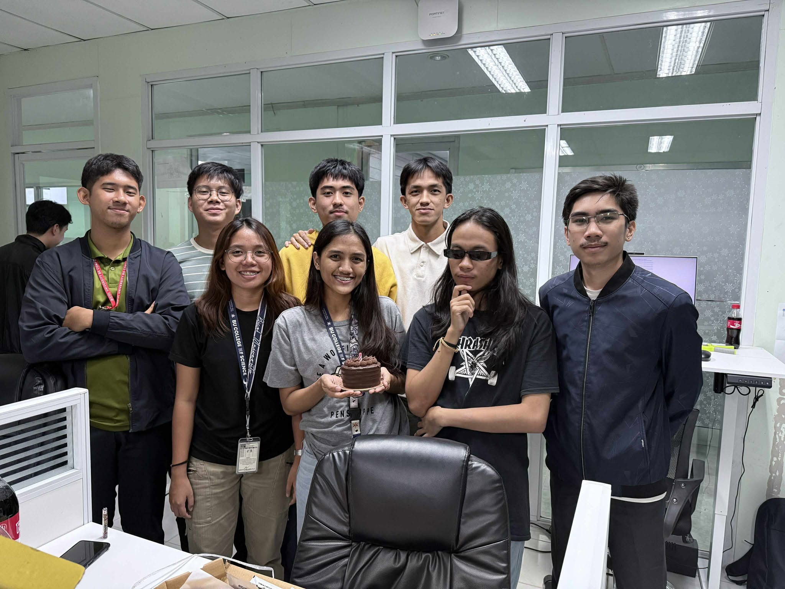
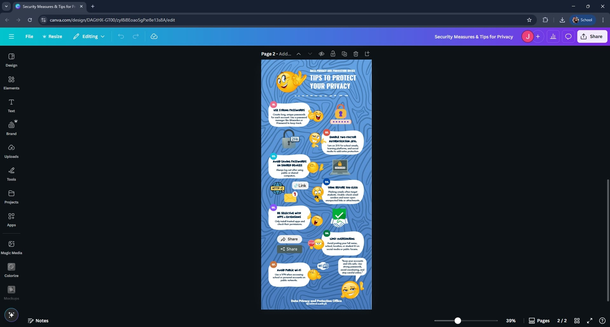

📚 My OJT Journey
A comprehensive documentation of my On-the-Job Training experience
Jahred B. Vapor
BSCS-3B
Google Forms & AMS UI Design
July 1 - July 5, 2025

📝 What I Learned
Learned how to create and link Google Forms with Google Sheets, gained experience in UI design for mobile applications, and understood the importance of clear communication when dealing with technical limitations.
🎯 Tasks Completed
- Created Google Form for utility worker evaluations
- Linked form to Google Sheets for data collection
- Started UI design for Asset Management System (AMS) mobile app
- Assisted with front desk duties
💭 Reflections
During my first week at BU ICTO, I encountered challenges with form customization but learned to communicate technical limitations effectively. The transition to AMS UI work allowed me to apply classroom knowledge to real-world projects.
UI Design & Programming Skills
July 8 - July 12, 2025
Image not found. Please check that week2-ui-design.jpg exists in the same folder as the HTML file.
';" />
📝 What I Learned
Gained proficiency in UI design workflow, learned basics of PHP and JavaScript through self-study, and developed skills in data verification and organization under time pressure.
🎯 Tasks Completed
- Continued AMS Mobile app UI design
- Self-studied PHP and JavaScript fundamentals
- Verified and organized data for freshmen enrollment
- Handled high call volumes and inquiry management
💭 Reflections
This week highlighted the importance of adaptability and self-learning. Taking initiative to study new programming languages and working under pressure improved my problem-solving abilities.
AMS Data Entry & Office Life
July 15 - July 19, 2025

📝 What I Learned
Learned about data entry processes in the AMS Web application, understanding the importance of proper categorization and documentation of office supplies.
🎯 Tasks Completed
- Data entry for consumable supplies in AMS Web
- Categorized items under supplementary categories
- Selected appropriate fund sources and IARs
- Attended mandatory meeting with ICTO Director
💭 Reflections
The week was quieter but productive, focusing on systematic data entry. The office celebration highlighted the importance of work-life balance and building relationships with colleagues.
Data Entry & Cybersecurity Design
July 22 - July 26, 2025

📝 What I Learned
Learned about effective cybersecurity communication through infographic design while continuing to develop expertise in AMS data entry processes.
🎯 Tasks Completed
- Continued AMS Web consumable supplies data entry
- Designed cybersecurity infographics for students
- Created social media security tips content
- Collaborated with supervisor for design feedback
💭 Reflections
The combination of technical data entry and creative design work provided a well-rounded experience. Learning to communicate complex security concepts through visuals was particularly enlightening.
Data Management & Creative Design
July 29 - August 2, 2025
Image not found. Please check that week5-privacy-design.jpg exists in the same folder as the HTML file.
';" />
📝 What I Learned
Enhanced proficiency in AMS Web data entry and refined design skills through the creation of privacy-focused infographics.
🎯 Tasks Completed
- Continued supplementary items data entry in AMS Web
- Completed online privacy tips infographic
- Started main consumable supplies data entry
- Received positive supervisor feedback
💭 Reflections
Balancing multiple tasks while maintaining quality showed my growth in professional efficiency. The supervisor's satisfaction was encouraging and motivating.